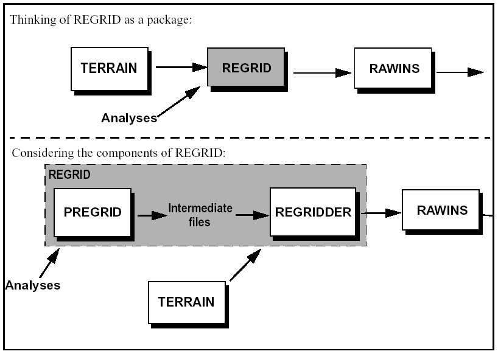

前置資料處理 - REGRID（初始猜測場 ）
REGRID 之目的在讀取氣壓層上的氣象分析資料，並把分析資料由原有的格點和地圖投影插值到經由 TERRAIN 這支前處理程式所定義的網格點和地圖投影上，換句話說就是將 NCEP/TOGA 觀測資料或是預報場資料，內插到 MM5 模式網格點上，形成模式初始猜測場。
REGRID 為 MM5 系統流程圖中的第二步，他需要來自 TERRAIN 程式的輸出作為其輸入，並為 RAWINS，LITTLE_R，或是 INTERPF 產生輸入文件。
REGRID概略圖： 
REGRID 處理初始資料
- 解壓縮REGRID.tar.gz：
tar –zxvf REGRID.tar.gz - 進行編譯（必要時請修改Makefile）：
make 修改 REGRID/pregrid/pregrid.csh：
請在這個 c-shell 腳本中設定好你資料格式、所在位置以及時間，一般來說是使用 GRIB 格式資料。裡面可能會需要修改的東西如下：set DataDir = 你資料所在的位置 # 移除下面的 "#" 來選擇要讀入的資料格式，選用其他資料時記得要把現在的 GRIB 註解掉 # set SRC3D = ON84 # Old ON84-formatted NCEP GDAS analyses # set SRC3D = NCEP # Newer GRIB-formatted NCEP GDAS analyses set SRC3D = GRIB # Many GRIB-format datasets, # 要讀入的資料名稱格式 set InFiles = ( ${DataDir}/EC* ) # set InFiles = ( ${DataDir}/fnl* ) # 標明要使用哪種SST資料 # set SRCSST = ON84 # set SRCSST = NCEP # set SRCSST = NAVY # 這裡的 $SRC3D 表示它會使用之前設定的 SRC3D 變數，在本例中就是 GRIB set SRCSST = $SRC3D 標明要使用哪種雪的資料 set SRCSNOW = $SRC3D # set SRCSNOW = ON84 # set SRCSNOW = GRIB # 模擬起始時間 START_YEAR = 2001 # Year (Four digits) START_MONTH= 09 # Month ( 01 - 12 ) START_DAY = 15 # Day ( 01 - 31 ) START_HOUR = 12 # Hour ( 00 - 23 ) # 模擬結束時間 END_YEAR = 2001 # Year (Four digits) END_MONTH = 09 # Month ( 01 - 12 ) END_DAY = 19 # Day ( 01 - 31 ) END_HOUR = 00 # Hour ( 00 - 23 ) # # 決定資料處理時間間隔，一般來說分析資料六小時一筆，所以用 21600 # Define the time interval to process. # INTERVAL = 21600 # Time interval (seconds) to process. / End_Of_Namelist # # Tell the pregrid programs which Vtables to use. Do this only # if you have selected GRIB-formatted input using SRC___ = GRIB above. # The directories referenced here are relative to REGRID/pregrid/. # # The Vtable files specified in VT3D will be applied to the files # specified in the InFiles variable. Similarly, the Vtable files # specified in VTSST, VTSNOW, and VTSOIL will be applied to the files # listed above in InSST, InSNOW, and InSoil, respectively. # # 若選用GRIB，則須更改下方的 VT3D, VTSST, VTSNOW, VTSOIL 的讀取格式名稱，例： set VT3D = ( grib.misc/Vtable.ERA3D ) set VTSST = ( grib.misc/Vtable.ERASST ) set VTSNOW = ( grib.misc/Vtable.ERASNOW ) set VTSOIL = ( grib.misc/Vtable.AVNSOIL ) # Vtable 為變數對照表，可至 ECMWF 查你需要的變數的code，再看你需要哪一個表，對照表可參考[http://cf-pcmdi.llnl.gov/documents/cf-standard-names/ecmwf-grib-mapping](http://cf-pcmdi.llnl.gov/documents/cf-standard-names/ecmwf-grib-mapping)- 將 pregrid.csh 加上可以執行的權限：
chmod u+x pregrid.csh - 執行 pregrid.csh：
./pregird.csh - 檢查輸出：
確認 pregrid 程式產生了所需時間的資料檔。在 REGRID/pregrid/ 下，檢查每個時間上都產生了哪些變數場（ex: FILE:yyyy-mm-dd_hh, SNOW_FILE:yyyy-mm-dd_hh, SST_FILE:yyyy-mm-dd_hh 等等） - 修改 namelist.input：
修改在 REGRID/regridder/ 下的 namelist.input 檔案，設定要與先前一致- &record1 的部份為起始時間與結束時間
- &record2 的部份為模式物理參數基本設定
- &record3 的部份為資料來源
- root 的部份要放剛剛 pregrid 產出來的資料
- terrain_file_name 則是放上地形檔
- constant_full_name 則是放上固定不變的場，比如說海溫資料有缺，只有第一筆可用，那就可以把他放進去
例：
root = '../pregrid/FILE' '../pregrid/SST\_FILE' '../pregrid/SNOW\_FILE' terrain\_file\_name = '../../TERRAIN/TERRAIN\_DOMAIN1' constants\_full\_name = ' ' / - &record4 的部份則是讓你選擇要不要輸出各種除錯訊息
- &record5 為熱帶氣旋渦旋植入的部份 在 namelist 中，沒有 SNOW 的資料也沒關係，程式會自動略過。
- 執行 regridder：
./regridder
若執行成功將會產生檔案 "REGRID_DOMAIN#"